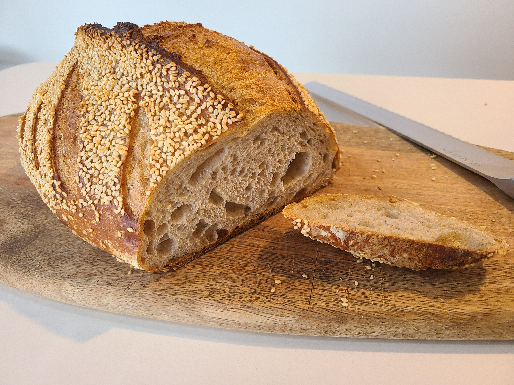

I started tinkering with sourdough in 2018. I made my first starter Rupert and eventually got my tools and techniques dialed in to produce consistently decent bread. I gave jars of Rupert to all my friends and they started baking too. In 2020, I was still experimenting and changed the formulation of the starter, dubbing it Mabel. She served us well until 2022 when we headed to Paris, land of incredible baked goods and very small apartment kitchens. Bread baking was on hiatus until we returned to Montréal in fall 2024. My friend Félix has been keeping his Rupert fork going and baking incredible loaves since the early days, and returned some starter to me. So behold, Rupert (Jr.) lives!
🥱 TL;DR
(read on for the full recipe)
- Ongoing:
- Keep a healthy sourdough starter going in your fridge
(Get in touch if you need a little Rupert)- The night before:
- Create your levain (sourdough mixture) and autolyse (flour and water: your base dough)
- On the day:
- Mix together the levain and autolyse; add salt. Knead everything together thoroughly
- Bulk fermentation: Let the dough rest in a large covered bowl for several hours until it roughly doubles in size. Perform an occasional stretch fold (every 15 min at start and 1x per hour later). This step might take 3 - 8 hours depending on the dough, hydration, and temperature and humidity of the room.
- Dump the dough out on a floured surface. Gently fold it together in thirds, then roll it up into a loaf-shaped oblong. Dust it with flour and put it in a banneton.
- Seal the banneton in a plastic bag and place it in the fridge overnight to proof.
- The next day:
- Place a large dutch oven on your oven and preheat to 230° C.
- Tip your dough out onto parchment paper. Use a spray bottle to mist water on the top. Sprinkle with sesame seeds. Score the top of the loaf with your lame or razor.
- Place in dutch oven. Add a couple ice cubes under the parchment paper to create steam.
- Bake covered for 30 min, then remove cover and continue baking for another 15 - 25 minutes. Watch for appropriate color to decide when it’s done.
- Immediately remove from dutch oven and place on wire rack to cool completely.
Full recipe
About this recipe
This recipe is mostly a refinement from my previous previous sourdough recipe, which in turn largely follows the excellent recipe and information from The Bread Code. I’ve adapted it to my own, taking into account the local Canadian flours available here, the climate, and my own experiences and preferences (especially the sesame seeds!)
The recipe is broken up into 4 steps: sourdough starter, day-before prep, day-of making, and next-day baking.
Cooking time
This bread is ideally made over three days, though the bulk of the work is on the second day.
- Day 1 (evening): 10 minutes
- Feed the starter / create levain
- Mix the autolyse
- Day 2: Up to 1 hour of active work, 4 - 8 hours doing occasional folds
- Mix the dough
- Bulk fermentation
- Shape loaf
- Day 3: 10 min active work, 1 hr baking time
Ingredients
| Amount | Ingredients |
|---|---|
| 100g | sourdough starter (see starter section below) |
| 375g | unbleached organic white bread flour |
| 125g | organic whole wheat flour |
| 350g | water |
| 12g | sea salt |
| rice flour (optional) | |
| sesame seeds |
You’ll also want these tools:
- kitchen scale
- banneton (proofing basket) - I prefer the batard-shape (oblong) with a cloth liner like these
- bread lame (or sharp razor blade) to score the top of the loaf
- spray bottle that can produce a fine mist
Steps
0. Sourdough starter
Before starting you need to have a good and healthy sourdough starter. Ideally this is one you have and maintain, because it needs regular feeding to stay fresh and usable. I won’t go into detail about how to make a starter or how to maintain it1, but essentially you want it to be nice and bubbly. You can achieve this by feeding it roughly once a week and keeping it in the refrigerator.
To feed the starter, mix equal parts flour (I like to use rye flour), water, and existing starter together. Discard the rest of the old starter.
I. Day before prep
There are two steps to do the day before. One is essential, the other is optional.
1: Create your levain (essential)
What is levain? Essentially it is just an off-shoot of your starter, made the night before to guarantee that it is fresh, ready to use, and suits the properties of the bread you want to make. For simplicy’s sake, this levain will just be the same as my starter, measured to be the right quantity for my bread.
You want 100g of starter, so combine 33g of existing starter, 33g of flour (your choice, but I stick with rye as it gives the bread a nice earthy nutty flavour), and 33g of water. Mix it in a medium size bowl or container that you can cover well. Put it in a warm-ish spot in your kitchen and leave for between 8 and 16 hours (e.g., overnight). When you are ready to proceed the next day, it should be slightly liquidy and bubbly.
💡 This is also probably a good time to feed your regular starter and stick it back in the fridge till you are ready to bake next.
2: Create your autolyse (optional)
What is an autolyse? It’s a fancy word for the flour and water you’ll use for your dough. Creating the autolyse beforehand lets the flour hydrate well and the dough it will become soft and silky smooth over time. Check for the “windowpane effect” after it has sat overnight, where you can pull a bit of the autolyse apart and it will stretch very thin but not tear, so the stretched centre is a bit translucent.
🚨 You don’t have to do this the night before, you could do it the following morning, but make sure the autolyse has at least a couple hours to sit before adding the levain.
Get a big bowl and find a lid that can cover it well.
Weigh and combine your flours.2 Mix them together with a whisk.
Measure the water by weight (on a scale) or in a measuring cup (1g water = 1ml) and add to the flour. Mix the flour and water together by hand until it is well combined into a sticky ball. Use a dough scraper to get all the bits off the sides of the bowl (and off your fingers) and shape it as best you can into a ball.
Leave the autolyse in the big bowl and cover it. Leave it overnight. (Or do this in the morning, leaving it for at least two hours before continuing.)
II. On the day
🎉 Today is the day you “make” the bread, though you won’t bake it until the following day. But this is where all the work is.
1: Combine the ingredients
- Get our your autolyse. Everything will happen here in this bowl.
- Put it on a scale, and then weigh in 100g of your beautiful bubbly levain. (Your levain should be about 100g, but it doesn’t hurt to check the weight just to be sure.)
- Use your hands to mix and knead the levain and autolyse together.
- Once they are getting well combined (~2 minutes of mixing), add the salt.
- Continue hand mixing/kneading until everything is very well combined, approximately 2 minutes more.
- Mound it up in a ball and leave it in the bowl. Cover it with a lid (or wet tea towel if you don’t have a lid that fits).
2: Bulk fermentation
In the bulk fermentation step, you’ll let the dough do its thing for a few hours while the naturally formed yeasts convert sugars into gas yada, yada, yada… until the dough gets a bit bubbly and roughly doubles in size.
How do you tell when the buk fermentation is done?
Once your dough is all combined in the last step, cut off a little golf-ball-sized chunk of the dough. Put it in a small narrow glass jar. Let it settle to the bottom, then put a small rubber band around it to mark where the dough comes up to on the side of the jar. This is your measuring tool. Keep an eye on this, and when the top of the dough has risen to double its size, you know the fermentation step is complete. See The Bread Code’s video (although I prefer a narrower jar to make it easier to read).
Perform a stretch and fold on the dough each 15 minutes for the first 2 - 3 hours. This promotes gluten formation and strengthens the dough. So you can basically keep living your life, pause to do the stretch and fold, set at timer for another 15 minutes, and go back to your business until it goes off again.
💡 Run your hands under water so they are wet when you fold the dough; it won’t stick and is much easier to work with. (And obviously, always wash your hands before you touch the dough!!)
After about 2 hours, increase the time between folds til 30 minutes, and after about 4 or 5 hours, increase the time to 1 hour. The longer the fermentation time, the gentler you want to be with the dough too. All those little foamy bubbles mean it’s working, so go softly and try not to disrupt the dough too much.
Ok fine but really how do I know when the fermentation is done?
The exact amount of time for this step depends on a myriad of interconnected variables: the hydration (water amount) of the dough, type of flours used, the humidity, ambient room temperature, etc. It could be as short as 3 hours and as long as 8 hours or more. My fermentation times are usually somewhere between 5 and 7 hours, but it’s different every time.
Look for these signs to know your fermentation is done:
- The dough has many little air pockets (larger bubbles) under the surface.
- It’s pliable and jiggly, but still maintains its surface tension and elasticity.
- Your little jar/measuring tool shows you it’s roughly doubled in size.
🚨 DO NOT OVER FERMENT YOUR DOUGH!! If you do, all is lost; you’ll have a sad flat loaf. In my experience it is much better to under-ferment than over-ferment. Keep in mind the loaf will proof in the fridge overnight.
As with almost all of these steps, it just takes a lot of practice and experience. Eventually you will just start to be able read all the little telltale signs and hit it right every single time.
3. Shaping the loaf
When the dough reaches proper fermentation level, it’s ready to be shaped into a loaf and put in the fridge to proof overnight.
Prepare your banneton by knocking out any old flour and dusting it with new rice flour. If you don’t have rice flour use whatever flour you have on hand.
Liberally sprinkle bread or all purpose flour on a clean countertop. Gently flop the dough out of the bowl onto the flour and arrange it in a semi-rectangular or oval shape facing away from you (e.g., “portrait mode”). Make sure there is plenty of flour and it’s not sticking to the countertop.
Taking care not to tear the dough, gently pull out the top third of the dough and fold it back onto itself. Repeat with the bottom third, so your dough is in three layers.
Even it out as best you can then rotate it 90° so the long way is facing away from you. Starting at the distant end, gently stretch the dough and roll it up back towards you. You’ll end with a jiggly frumpy Swiss Cake Roll looking thing. Perfect!
Roll the dough over so the seam created from the roll-up is on the bottom. Gently but firmly complete the shaping so it forms a nice oblong loaf shape. If your fermentation steps have gone right, the dough should have nice strength and stay nicely… loafed. You can pinch the ends together to give it more… loafeyness.
Invert and place the loaf in the banneton so the nice side is down and the seam side is up. You can pinch the seam together if you like. (Consult numerous YouTube videos for good shaping technique!)
Dust it with more flour, place it in a plastic bag and seal it, and put it in the refrigerator overnight.
III. Baking day!
Your bread will proof overnight and increase in size. Like with the bulk fermentation, it is important to know precisely when the bread is properly proofed and ready to bake. Too soon or too late and the bread won’t rise well and your loaf will be flat and stupid. 💩
How to know that your bread is proofed and ready to bake
- Look at it. Has it grown in size? Good. It might be ready…
- Poke it.
- ⏳ If it quickly springs back, it’s not ready. Put it back in the fridge for another couple hours.
- 🚫 If it barely springs back, or doesn’t at all, you’ve over-proofed. All is lost. Eat your sad flat bread in shame.
- ✅ If it slowly springs back, you’ve hit it just right and it’s ready to bake.
1. Preparation
Put a big dutch oven into your oven on a low rack. Remove the other racks to give plenty of space. Preheat the oven to 230°C.
🧑🔬 If you don’t have a dutch oven that can fit your loaf of bread, you can use a pizza stone if you have one, or barring that you can cook the loaf on a baking sheet. But each will give you slightly inferior results.
- The dutch oven will keep steam in, creating the best environment for oven spring.
- The pizza stone will not hold the steam in, but the mass of the stone will hold high and consistent heat.
- The cooking sheet is the least optimal option, but if you’ve done a good fermentation and proof it should come out okay.
If using a dutch oven or pizza stone, let the oven run for an additional 20 to 30 minutes after preheating to ensure the dutch oven/stone is fully up to temperature.
Get all the things you need together:
- Loaf out of fridge and plastic off
- Large piece of parchment paper on counter
- A bowl or cup of sesame seeds
- Food-safe spray bottle of water, on fine mist setting
- Your bread lame or razor
- A bowl with a few ice cubes in it
- Your oven mitts to handle the dutch oven
2. Baking
Because you want the dutch oven to maintain its optimal heat, you’ll want to do all the steps to get your loaf into the oven quickly and efficiently.
- Turn the loaf out onto middle of the parchment paper, with the bottom (in the banneton) now on top
- Finely mist the top with water - only lightly, this is just so the sesame seeds stick
- Liberally sprinkle sesame seeds over the top and on the sides. Pat them lightly so they stick but don’t disturb the dough too much.
- Take the bread lame or razor and score a curved line down the top of the loaf. Add other small scores on the side if you like too. (Again, there is an art to this, consult images and videos on the internet!)
- Put on your oven mitts and take the dutch oven out of the oven. Take the lid off. (If not using a dutch oven, you can adapt the remaining steps as necessary…)
- Lift the parchment paper with the loaf on it and place it in the dutch oven.
- Place a couple ice cubes in the dutch oven at the edges underneath the parchment paper so they don’t directly contact the loaf.
- Put your mitts back on, put the lid on the dutch oven and place it back in the oven.
Cook for 30 minutes, then take the lid off. Look to see if the loaf has risen nicely. This is the moment of truth! If things have gone perfectly the bread should have a nice ear on it.
Turn the oven light on and continue cooking the loaf for 15 to 25 minutes. Check the color and wait for it to turn a nice rich brown. Try not to open the oven too much (thus the light on so you can watch it).
When it is done, remove the dutch oven and carefully lift the loaf out by the parchment paper.
Place it on a wire rack to full cool before eating.
To serve
It is best to let the bread rest for a few hours before eating. When it first comes out the inside will still be quite moist and difficult to cut cleanly.
After a few hours, you can eat it, or store it in a paper bag until the next day.
If you do eat it the same day, keep it in a paper bag for the rest of the day, and then place it in a plastic bag before you go to bed. Essentially you are controlling the amount of humidity by doing this. (Also this is good practice for fresh bakery breads you buy!)
There are a million ways to eat great bread. Our favourites:
- Toast with almond butter in the mornings
- Avocado (or guacamole) toast!
- Tomato, cheese and mayo sandwiches
- Hummus sandwiches
- Sliced fresh or toasted on a cheese plate
- Accompanying soups, salads, etc.
Conclusion
Breadmaking is a true art form. I’m glad to have learned some basics, but truthfully there is so much more to learn and experiment with. This is only the beginning. It is also a nuanced and meticulous process that take a lot of practice to get just right. (It’s taken me a few hours just to write out this recipe 😅) But it is also fun to learn and the bread that comes out is honestly the best bread you will ever have… mostly because YOU MADE IT!!
Enjoy!
Footnotes
-
See The Bread Code’s amazingly informative and detailed “The Sourdough Framework” for all the information you need about making and maintaining your own starter. ↩
-
This recipe uses 75% white bread flour and 25% whole wheat. You can adjust these proportions as you like, but bear in mind that too much whole wheat flour can make your bread kind of cardboard-ey and will typically require higher hydration (more water). Using other types of flours can be fun too, though you will have to experiment with the other parameters of the recipe (amount of water, fermentation and proofing time, etc.) to get great results. ↩